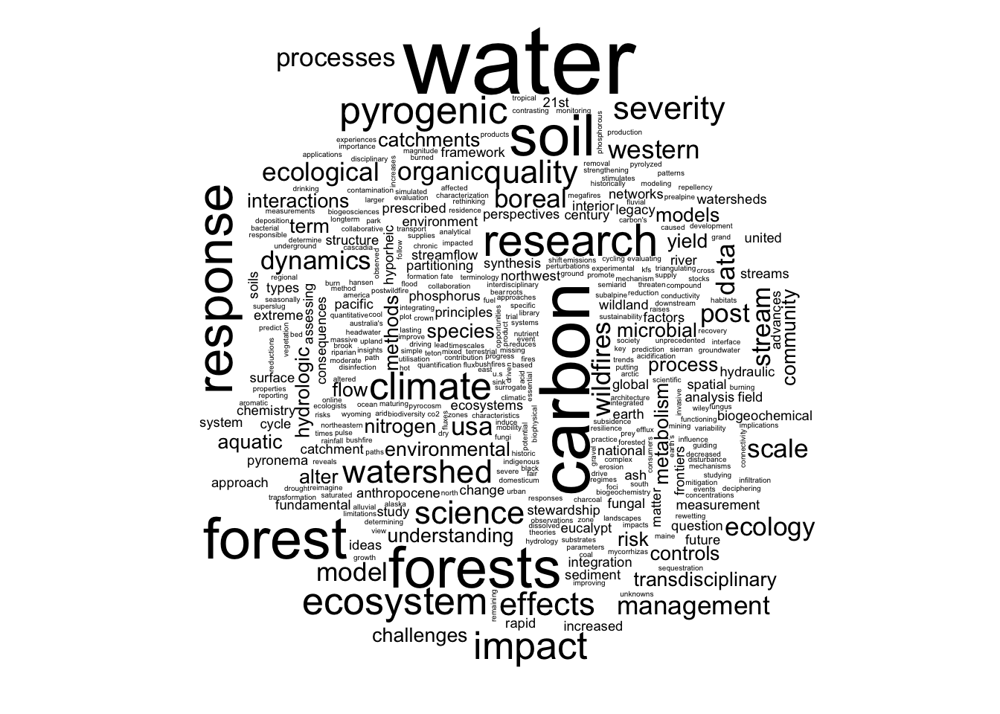

Exploratory Text-Data Analysis
A Text analysis with Tidytext
This is an exploratory text analysis of abstracts from the collection of papers assembled based in survey responses
Loading the dataset & Tokenization
Our dataset
Our initial dataset contains 82 abstracts from the papers… Research Areas: Which research area do you identify with? Choose all that apply
Rows: 81
Columns: 5
$ id <chr> "YQ8B4WSF", "5WDCKM5D", "R2T3JGBX", "NLBG56V4", "U95U29ZB", "…
$ title <chr> "Reimagine fire science for the anthropocene", "Fire as a fun…
$ author <chr> "Shuman, Jacquelyn K; Balch, Jennifer K; Barnes, Rebecca T; H…
$ journal <chr> "PNAS Nexus", "Journal of Ecology", "Biogeosciences", "Ecosph…
$ abstract <chr> "Fire is an integral component of ecosystems globally and a t…Tokenization
Tokenization is the process of separating every single word contained in an answer and creating a new data file that will contain as many rows as total words in the original dataset.
Let’s use wordclouds to visualize the ouput of tokenizing the titles. I had to adjust the size of the words using the scale parameter (maximum size = 4 by default). Otherwise certain long words would not be fit into the plot (see stackoverflow answer)

Action items: 1. Homogenize singulars and plurals 2. To find a lexicon for most common words used in research titles in environmental science. Ask Sammeera(?)
Pressing questions answers requires an extra step. We need to remove “filler words” a.k.a. stop words (e.g., a, the, this…). We also need to deal with plurals and singulars of the same word.
More info about lexicons and text categorization can be found here
Let’s use wordclouds again to see the difference between the raw answers and “cleaned” answers for the pressing questions topic.
Dealing with Plurals and singulars
From Stack overflow
“The best way to do this is to use a tool to tag your plural nouns, and then to convert these to singular. Unlike the stemmer solution, this will not stem words such as stemming to stem, or quickly to quick, etc.I recommend using the spacyr package for this, which integrates nicely with quanteda.”
Yet, there are a few steps required for this to work, as detailed in Running Python Chunks in RStudio and rmarkdown. After that you could also watch this YouTube Tutorial.